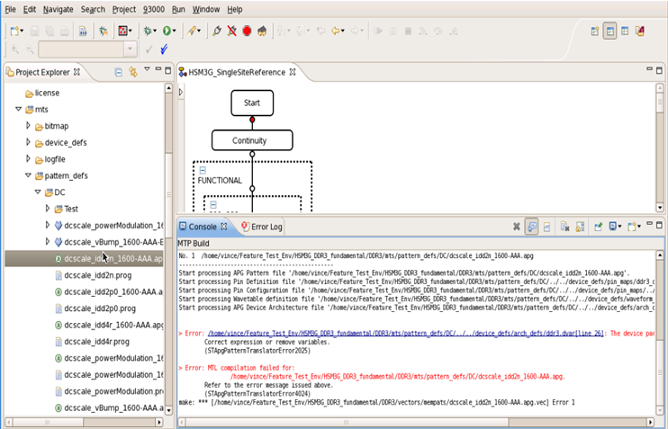

MTP-EWC
MTP-EWC is one of the SmarTest perspectives. It is the environment for MTP tests, offering all kinds of MTP features and tools. You will use it to develop MTP test programs, perform MTP tests and debug.
To open it, from the menu bar of SmarTest, select .
From there, you can:
- Launch the MTP tools easily.
- Create MTL setup files instantly.
- Develop and edit setups easily. For details, see Features for the editor of MTP-EWC.
- Build the MTP files with flexible and multiple build
configurations.
Especially, you can set up a build configuration containing different compilers for different sets of .apg files.
- Run MTP testflows with customized run configurations.
User interface
The MTP perspective contains views and editors, demonstrated in the following picture:
- The Project Explorer view: Lets you navigate projects and files.
- The mts folder contains all MTL setup files and .apg files.
- Folders containing the MTP .apg files are presented with .
- MTP .apg files are presented with .
- Editors: Let you develop and edit test programs.
Various features have been offered in the editors to ease your programming. See Features in the editor view of MTP-EWC.
- The MTP Build Console view: Displays compilation and build
information for MTP files.
When an error occurs, a link to its location is provided in the console as a hyperlink. The hyperlink opens the associated at the line and column containing the error.

Functional changes
- Introduced in MTP 3.1.1
- MTP 3.1.3: The MTP Build console view is added.
- MTP 3.3.2: The MTP Build console supports hyperlink for locating the build or compilation errors in files.